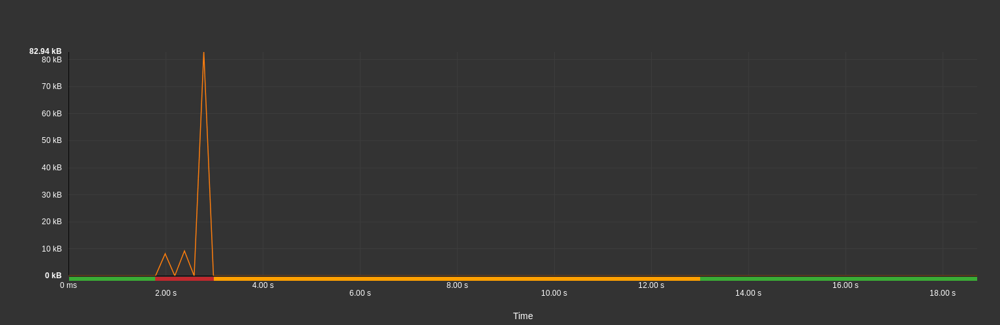
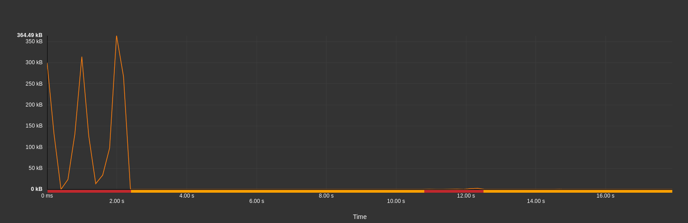

En ce qui concerne l’utilisation du réseau en mobilité, le monde des applications se divise en deux catégories : celles qui gardent la batterie chargée, et celles qui creusent.
Dans quelle catégorie se trouve votre application ?
Ce n’est un secret pour personne, une application transmettant beaucoup de données consomme plus qu’une application moins gourmande en data.
Dans cet article, nous allons voir qu’en plus du volume de données, le déroulement des échanges joue également un rôle clé dans l’impact énergétique de votre application.
Il était une fois dans le Wi-fi
Pour bien comprendre pourquoi contrôler le volume de données ne suffit pas, concentrons-nous tout d’abord sur le fonctionnement d’une cellule réseau (Wi-fi, 3G, 4G, etc.).
Deux états de base sont disponibles pour tous les types de cellule réseau : on et off.
En fonction des technologies, des états intermédiaires viennent s’ajouter afin d’ajuster aussi finement que possible la consommation par rapport au besoin de transfert.
Comme le réveil de la cellule réseau ne se fait pas instantanément (environ une seconde), celle-ci reste allumée quelques secondes après toute transmission pour être aussi réactive que possible. Dans le cas du Wi-fi, ce temps est de 10s.

Le bon, la brute et le truand
Pour illustrer les problématiques liées à ces temps de transition, observons trois exemples simples, tirés de mesures réalisées sur des sites réels. Les graphiques représentent la quantité de données échangées au cours du temps.
NB : Les smartphones étant des systèmes complexes, des événements indépendants de votre application peuvent solliciter la cellule réseau de votre appareil et ainsi perturber vos propres transmissions.
Nos tests sont réalisés en environnement strictement contrôlé et nous nous sommes assurés que les mesures qui suivent n’ont pas été perturbées par de tels événements externes.

Commençons par le cas idéal. Des données sont transmises de façon regroupée, puis la page est entièrement chargée.
Dans ce cas, la cellule réseau est sollicitée en continu pendant un bref instant (intervalle rouge) puis, après les 10s d’attente règlementaire (intervalle orange), se met en veille (intervalle vert).
Rien à dire, 10/10.

Le deuxième exemple nécessite manifestement davantage de données, mais on peut voir que la transmission ne se fait pas en continu. Pendant les courts intervalles sans transmission, la cellule radio reste allumée, en attente d’une éventuelle reprise des échanges.
Entre le premier et le dernier octets échangés, la cellule Wi-fi est restée allumée en permanence alors que près de la moitié du temps a été passée à attendre.

Enfin, la dernière illustration est presque trop belle pour être vraie : après les transmissions initiales, la cellule réseau se met en attente, comme dans le premier exemple. Cependant, juste avant de passer en état de sommeil, quelques ko sont transmis, ayant pour effet de réinitialiser le compte à rebours à 10s.
Dans cet exemple, le dernier pourcent des données échangées est responsable de près de la moitié de la consommation énergétique de la cellule réseau.
Et pour quelques milliampères/heure de plus
Quelques conseils pour éviter ces phénomènes :
- Limitez au maximum le volume de données échangées. Cela semble évident, mais ça ne fait pas de mal de le rappeler.
- Évitez les transmissions une fois le chargement initial terminé.
- Déléguez la gestion des échanges de données à Android avec GCM Network Manager, par exemple.
Plus généralement, la documentation d’Android sur l’utilisation du réseau est très complète sur le sujet.
Pour observer l’activité réseau, vous pouvez utiliser l’un des outils suivants :
- ARO
- Android Device Monitor
- Battery Historian, récemment présenté sur ce blog
- GREENSPECTOR, bien sûr !
Générique de fin
En plus du volume des données, nous avons vu qu’il est également important de porter une attention particulière à la façon dont ces données sont effectivement échangées par votre application ou lors de la consultation de votre site web.
Des périodes de latence, même courtes, entre les transferts, peuvent avoir un effet conséquent sur la consommation énergétique, alors implémentez vos transmissions avec diligence et ne laissez plus la cellule réseau faire la loi !